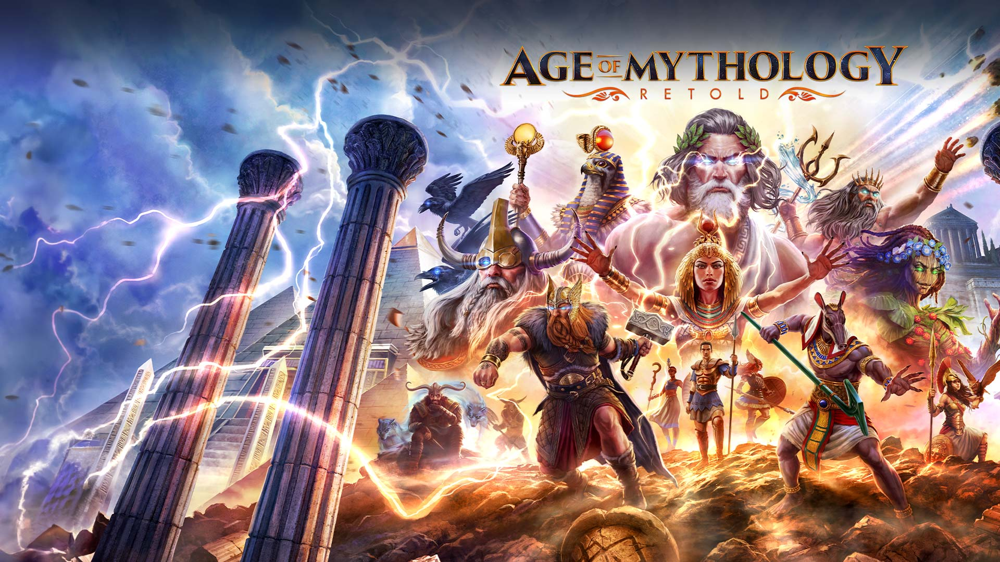

First Love
March 8, 2021
Have you ever been in love with something so much that you thought you could do it every day for the rest of your life and will never get bored? Age of Mythology was that thing for me.
My parents bought the first PC in my home when I was in first grade, back in 2002. Hard N Soft is a computer shop in Manjeri. I was excited when those guys came in and set up the PC. They installed some essential software and some basic games like midtown madness, road rash, etc. So besides these, they installed one more game Age Of Mythology.
I never knew how to play that game, As a matter of fact, I never played that, but my brother used to play that a lot, I assume (My brother was six years elder than me, and I did not have much voice over him when my parents weren't around). So what I would do was I would take that green plastic chair and sit beside him while he was playing. I never understood anything, but seeing new buildings, farms, people, war, mythical creatures, gods, god powers, and everything was lovely.
Slowly I started getting the hang of the game. I started playing it every time I got the computer. Yeah, that was a major problem back in school days after school, we had till "maghrib" as our free time. We could do anything then, After which it was our study time till we slept. But as umma loved me more than anything, she could never say No to me if I begged too much, and I always got a bit extra time after my studies before my sleep.
Umma called the game "prostagma" (That was something in greek, meaning order/command. I never knew the meaning of that until now) because it was one of the words a greek character says when we select them.
Age Of Mythology, Set in ancient Cities like Atlantis, Greece, Egypt, and Norse lands. Each place had its gods, ways of life, war, mythical creatures, and Heroes.
The Age Of Mythology campaign starts with Atlantis being attacked by pirate ships. And Atlantis hero Arkantos is chasing the pirate ship who stole the trident of the greek God Poseidon. ( Greek had three significant gods, Zeus, Poseidon, and Hades. Zeus ruled over the skies. He was the God of the gods, Poseidon ruled over the Oceans, and Hades ruled the underworld). So Arkantos chased the pirate ships to retrieve the trident to continue receiving blessings from Poseidon.
Arkantos discovered that the pirates were led by an evil villain called Kamos. He fought them and retrieved the trident, but Kamos escaped warning Arkantos that he would decorate his ship with Arkantos's head.
These are just the first two stages, and there are 32 stages with many heroes from different places coming together. The stages are set across Atlantis, Greece, Egypt, and Norse lands (believe me when I say this one could not stop himself from falling in love with this storyline if he knew it entirely)
Odysseus, the great Greek Worrier, The man who came up with the idea of the Trojan Horse and defeated the tremendous undefeated city of TROY.
The wise Chiron is a local Hero in Greek, a centaur, i.e., half horse, half man. He sacrificed himself to save everyone and serve his purpose in life. (That was the first sacrifice I witnessed in my life before movies, before books, and probably even before I knew what sacrifice was).
These were a few among the heroes.
And Here I am on COVID-19 Quarantine day 44, at 23, after watching countless Age of mythology gameplay videos. Five different Age of mythology downloads from torrent, and 1000 try's to make it run on umma's laptop and calling one of my friends home to upgrade umma's lap to windows ten from windows seven and downloading one last torrent. And playing it for two days straight. And writing about it in my notes (I honestly did not know what I was thinking then.)
Fast Forward to September 11th, 2022,
I am 25. I decided to write something in my blog (The irony is I never liked writing or reading) anyway when I was thinking about my first blog post while walking through Cubbon park today. It did not take much time to get the answer because I never wrote much besides this.

So Regarding my first love (My brother has set up a PC in his new home in Banglore, where this was one of the first games we bought). I still play it when I'm at his place.